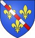

Antavla
1538264784 Robert d'Evreux of Salisbury

Far:
Robert II of Normandie (964 - 1037)
Mor:
Herleva
Född:
omkring 1008.
[1]
Barn med
1538264785 Hawise de Lazy
Barn:
Walter "the Fortunate" d'Evreux of Salisbury (1033? - 1070)
Personhistoria
Årtal
Ålder
Händelse
1008?
Födelse omkring 1008
[1]
1033?
Sonen
769132392 Walter "the Fortunate" d'Evreux of Salisbury
föds omkring 1033 Rosmar, Normandie, France
[1]
1037
Fadern
3076529568 ArchBishop Robert II of Normandie
dör 1037 Evreux, Haut-Normandie, France
>1060
Barnbarnet
384566196 Lord Edward D'Evreux of Salisbury
föds efter 1060 Salisbury, Wiltshire, England
[2]
1070
Sonen
769132392 Walter "the Fortunate" d'Evreux of Salisbury
dör 1070 Salisbury, Wiltshire, England
[3]
Källor
[1]
Tudorplace.com
[2]
Wikitree
[3]
Paul Douglas van Dillen